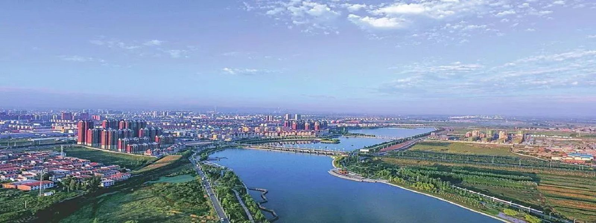

-----------我是跳转按钮----> ^ ^<----我是跳转按钮-----------
国家历史文化名城，新型以煤电为主导的能源重化工基地，中国农区最大的奶源基地，日用陶瓷生产基地，也是全国避暑休闲胜地。位于山西省西北部， 桑干河上游，西北毗邻内蒙古自治区，南扼雁门关隘。这里寒来暑往，四季分明，拥有众多各类规模的旅游景区景点。著名景点有崇福寺、应县木塔、杀虎口、朔州老城等。历史上先后涌现出西汉著名诗人班婕妤、三国名将张辽等杰出人物。
朔州市整体是黄土覆盖的山地形高原，自然条件复杂多样，过渡性质明显。地貌轮廓总体上是北、西、南三面环山，山势较高，中间是桑乾河域冲积平原，相对较低，呈倒“V”字结构。
朔州市属温带大陆性季风气候，根据山西气候区划方案，属晋北温带寒冷半干旱气候区。主要特征是四季分明。春季雨雪少，风沙大，蒸发量大，经常出现干旱天气；夏季雨量集中，间有大雨、暴雨、冰雹等；秋季雨水少，早晚凉爽，中午炎热；冬季风多雪少，气候寒冷。朔州境内气温水平分布的规律是由东南向西北递减。

主要有煤炭、石灰岩、铝土矿、耐火粘土、铁矾土、云母、石墨、石英、高岭土、沸石、长石、铁矿以及一定储量的金、铜、稀土等。各类矿产资源潜在价值25870亿元，占山西省17%，位居山西省第一。朔州市煤炭储量约494.1亿吨，占全省储量的1/6。矿石类型齐全，有高铝粘土、硬质粘土、半软质粘土和软质粘土4种。其中高铝粘土质优量多。
全市珍贵稀有保护动物有：国家一级保护动物，兽类有虎，鸟类有黑鹳；国家二级保护动物，兽类有豹，鸟类有天鹅、金雕、大鸨、灰鹤、雀鹰、白尾鹞、火鵟、毛脚鵟、红脚隼、猪隼、短耳鹗、红纹腹小鹗、雕饕蓑羽鹤；国家三级保护动物，兽类有石貂（又称扫雪），鸟类有鸢、鹊鹞、红隼、苍鹰、灰背隼、燕隼、大鸨等；中日保护候鸟在境内约有50多种。
点我back